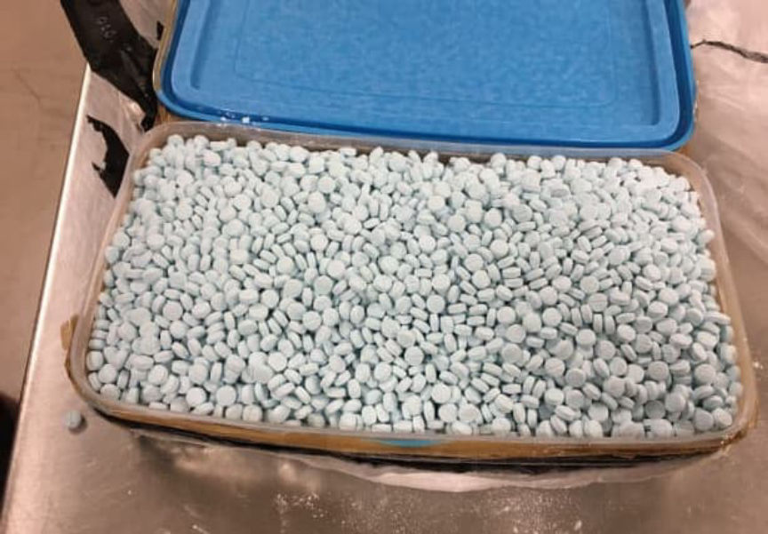
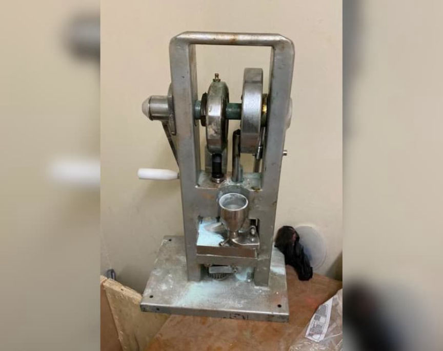
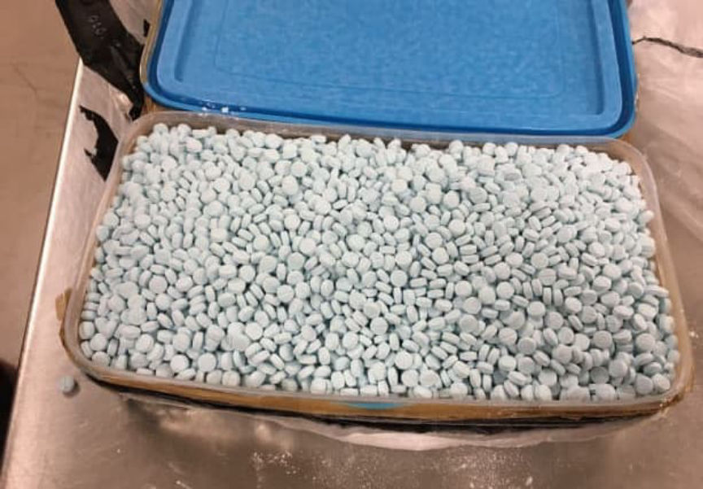
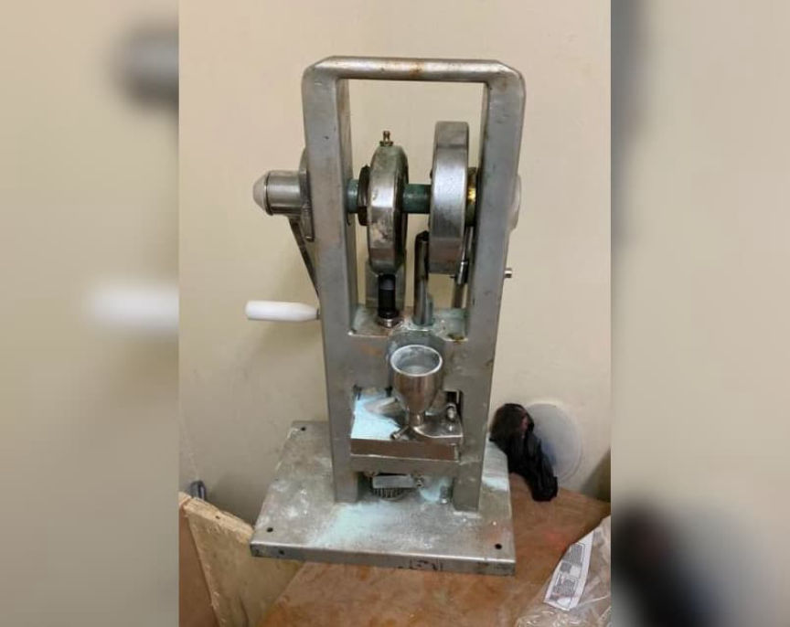

Fent Vendor XanaxKing2 Sentenced to 30 Years in Prison
~3 min read | Published on 2022-02-20, tagged Darkweb-Vendor, Sentenced using 594 words.
A California man was sentenced to 360 months in prison after he was found guilty of distributing fentanyl analogues through the dark web.
US District Judge Michael A. Shipp sentenced 30-year-old Andrew Tablack, of Beverly Hills, California, to 30 years in prison. A jury convicted Tablack of one count of manufacturing, supplying, and possessing with intent to manufacture and distribute cyclopropyl fentanyl pills and one count of conspiracy to Manufacture and Distribute Fentanyl pills.

An investigation led by the Organized Crime Drug Enforcement Task Force (OCDETF) resulted in Tablack’s arrest and subsequent imprisonment. The task force’s investigation revealed that Tablack and his accomplice Stephan Durham, 43, masterminded a fentanyl pill production operation from California. According to court records, the duo produced and distributed fentanyl-laced pills from at least March 2017 through December 2017.
The duo produced and distributed hundreds of thousands of fentanyl analogue pills throughout the United States using a vendor account on a darkweb marketplace. Investigators identified Tablack as the vendor “XanaxKing2.”
A 2017 investigation by the Drug Enforcement Administration (DEA) resulted in the seizure of approximately 300,000 pills containing cyclopropyl fentanyl at a residence in Monmouth County, New Jersey. During the investigation, the DEA found packages of cyclopropyl fentanyl pills at other homes in Monmouth County. Investigators later identified Tablack as the source of the drugs.

Taskforce members examined shipping records and found that a company in California had purchased nine pill presses. The supplier of the presses had shipped them to an industrial property leased to the same company. Further investigation revealed that Durham, Tablack’s co-defendant, owned the company.
Investigators intercepted packages addressed to the property leased by Durham’s company. The packages, which originated in China, contained fentanyl, fentanyl analogues, and other material used in the pill production process. Court documents revealed that the fentanyl supplier had disguised the drugs as food items or beauty products.
Police arrested both defendants in December 2017. Officers seized large amounts of cryptocurrencies, electronic devices, and a Rolls Royce Wraith during the raids.
Approximately 106,260.01646951 Waves seized on or about December 20, 2017; Approximately 275,000 Syscoin seized on or about December 20, 2017; Approximately 159,211.67613520 Shift seized on or about December 20, 2017; Approximately 95,016.989 Waves seized on or about December 20, 2017; Approximately 25,165.16586896 Ark seized on or about December 20, 2017; Approximately 7,268.81134075 OmiseGo seized on or about December 20, 2017; Approximately 17.48646464 Bitcoin seized on or about March 19, 2018; Approximately $5,400.00 in United States currency seized on or about December 20, 2017; One 2015 Rolls-Royce Wraith Sedan One Apple iPhone 7 Plus, 32GB capacity, seized on or about December 20, 2017; One Apple iPhone 7, seized on or about December 20, 2017; One Apple iPhone 6 Plus (broken), seized on or about December 20, 2017; One Apple iPhone 6 Plus, seized on or about December 20, 2017; One Samsung Cellular Phone, seized on or about December 20, 2017; One Dell Inspiron Laptop, seized on or about December 20, 2017; One Ledger Blue Security Device, seized on or about December 20, 2017; Two Ledger Nano S Digital Currency Hardware Wallets, seized on or about December 20, 2017; One Apple iPhone SE, seized on or about December 20, 2017; One Apple iPad Pro, seized on or about December 20, 2017;

During the height of the “XanaxKing2” operation, Tablack distributed approximately 400,000 pills every month.
In February 2022, Judge Shipp sentenced Tablack to 30 years in prison and three years of supervised release. The judge also ordered Tablack to forfeit the cryptocurrencies and electronic devices seized by law enforcement.
Indictment pdf
US District Judge Michael A. Shipp sentenced 30-year-old Andrew Tablack, of Beverly Hills, California, to 30 years in prison. A jury convicted Tablack of one count of manufacturing, supplying, and possessing with intent to manufacture and distribute cyclopropyl fentanyl pills and one count of conspiracy to Manufacture and Distribute Fentanyl pills.

This picture, which is is frequently used in other fent-related articles, originally came from a DEA bust in this case IIRC.
An investigation led by the Organized Crime Drug Enforcement Task Force (OCDETF) resulted in Tablack’s arrest and subsequent imprisonment. The task force’s investigation revealed that Tablack and his accomplice Stephan Durham, 43, masterminded a fentanyl pill production operation from California. According to court records, the duo produced and distributed fentanyl-laced pills from at least March 2017 through December 2017.
The duo produced and distributed hundreds of thousands of fentanyl analogue pills throughout the United States using a vendor account on a darkweb marketplace. Investigators identified Tablack as the vendor “XanaxKing2.”
A 2017 investigation by the Drug Enforcement Administration (DEA) resulted in the seizure of approximately 300,000 pills containing cyclopropyl fentanyl at a residence in Monmouth County, New Jersey. During the investigation, the DEA found packages of cyclopropyl fentanyl pills at other homes in Monmouth County. Investigators later identified Tablack as the source of the drugs.
Pill presses put you on a list.
Taskforce members examined shipping records and found that a company in California had purchased nine pill presses. The supplier of the presses had shipped them to an industrial property leased to the same company. Further investigation revealed that Durham, Tablack’s co-defendant, owned the company.
Investigators intercepted packages addressed to the property leased by Durham’s company. The packages, which originated in China, contained fentanyl, fentanyl analogues, and other material used in the pill production process. Court documents revealed that the fentanyl supplier had disguised the drugs as food items or beauty products.
Police arrested both defendants in December 2017. Officers seized large amounts of cryptocurrencies, electronic devices, and a Rolls Royce Wraith during the raids.

A press seized by the DEA.
During the height of the “XanaxKing2” operation, Tablack distributed approximately 400,000 pills every month.
In February 2022, Judge Shipp sentenced Tablack to 30 years in prison and three years of supervised release. The judge also ordered Tablack to forfeit the cryptocurrencies and electronic devices seized by law enforcement.
Indictment pdf